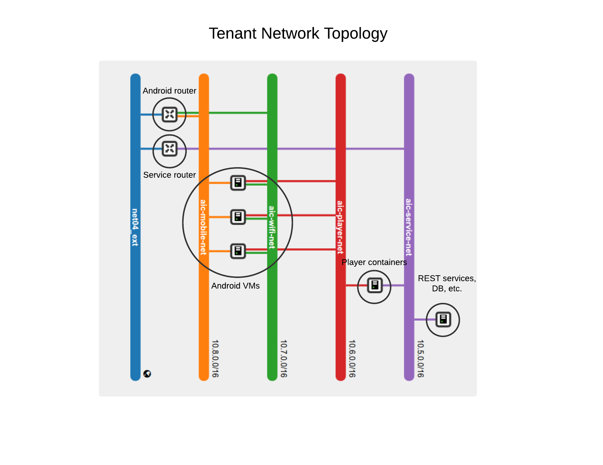

AiC Build & Deployment Tool
0.8
Cloud AiC Deployment
OpenStack Configuration
Bootstrap environment
Controller environment
Building the Player
Building the frontend
Installation
Using AiC
Architecture diagrams
AiC Build & Deployment Tool
Docs
»
Architecture diagrams
View page source
Architecture diagrams
¶
